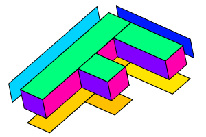
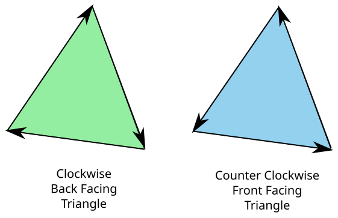

Cet article fait partie d’une série d’articles sur WebGL. Le premier a commencé par les fondamentaux et le précédent portait sur les matrices 2D. Si vous ne les avez pas lus, veuillez les consulter en premier.
Dans le dernier article, nous avons vu comment fonctionnaient les matrices 2D. Nous avons parlé de la façon dont la translation, la rotation, la mise à l’échelle, et même la projection depuis les pixels vers l’espace de découpage peuvent toutes être réalisées par 1 matrice et un peu de magie mathématique matricielle. Faire de la 3D n’est qu’un petit pas supplémentaire.
Dans nos exemples 2D précédents, nous avions des points 2D (x, y) que nous multipliions par une matrice 3x3. Pour faire de la 3D, nous avons besoin de points 3D (x, y, z) et d’une matrice 4x4.
Prenons notre dernier exemple et changeons-le en 3D. Nous utiliserons à nouveau un F, mais cette fois un ‘F’ 3D.
La première chose à faire est de modifier le shader de sommet pour gérer la 3D. Voici l’ancien shader de sommet.
#version 300 es
// un attribut est une entrée (in) pour un shader de sommet.
// Il recevra des données depuis un tampon
in vec2 a_position;
// Une matrice pour transformer les positions
uniform mat3 u_matrix;
// tous les shaders ont une fonction main
void main() {
// Multiplie la position par la matrice.
gl_Position = vec4((u_matrix * vec3(a_position, 1)).xy, 0, 1);
}
Et voici le nouveau
// un attribut est une entrée (in) pour un shader de sommet.
// Il recevra des données depuis un tampon
*in vec4 a_position;
// Une matrice pour transformer les positions
*uniform mat4 u_matrix;
// tous les shaders ont une fonction main
void main() {
// Multiplie la position par la matrice.
* gl_Position = u_matrix * a_position;
}
C’est devenu encore plus simple ! Tout comme en 2D nous fournissions x et y puis
définissions z à 1, en 3D nous fournirons x, y, et z et nous avons besoin que w
soit 1, mais nous pouvons profiter du fait que pour les attributs
w vaut 1 par défaut.
Ensuite, nous devons fournir des données 3D.
...
// Indique à l'attribut comment extraire les données de positionBuffer (ARRAY_BUFFER)
* var size = 3; // 3 composantes par itération
var type = gl.FLOAT; // les données sont des floats 32 bits
var normalize = false; // ne pas normaliser les données
var stride = 0; // 0 = avancer de size * sizeof(type) à chaque itération pour obtenir la position suivante
var offset = 0; // commencer au début du tampon
gl.vertexAttribPointer(
positionAttributeLocation, size, type, normalize, stride, offset);
...
// Remplit le tampon ARRAY_BUFFER actuel
// avec les valeurs qui définissent la lettre 'F'.
function setGeometry(gl) {
gl.bufferData(
gl.ARRAY_BUFFER,
new Float32Array([
// colonne gauche
0, 0, 0,
30, 0, 0,
0, 150, 0,
0, 150, 0,
30, 0, 0,
30, 150, 0,
// barre supérieure
30, 0, 0,
100, 0, 0,
30, 30, 0,
30, 30, 0,
100, 0, 0,
100, 30, 0,
// barre du milieu
30, 60, 0,
67, 60, 0,
30, 90, 0,
30, 90, 0,
67, 60, 0,
67, 90, 0]),
gl.STATIC_DRAW);
}
Ensuite, nous devons changer toutes les fonctions matricielles de 2D à 3D
Voici les versions 2D (avant) de m3.translation, m3.rotation, et m3.scaling
var m3 = {
translation: function translation(tx, ty) {
return [
1, 0, 0,
0, 1, 0,
tx, ty, 1
];
},
rotation: function rotation(angleInRadians) {
var c = Math.cos(angleInRadians);
var s = Math.sin(angleInRadians);
return [
c,-s, 0,
s, c, 0,
0, 0, 1
];
},
scaling: function scaling(sx, sy) {
return [
sx, 0, 0,
0, sy, 0,
0, 0, 1
];
},
};
Et voici les versions 3D mises à jour.
var m4 = {
translation: function(tx, ty, tz) {
return [
1, 0, 0, 0,
0, 1, 0, 0,
0, 0, 1, 0,
tx, ty, tz, 1,
];
},
xRotation: function(angleInRadians) {
var c = Math.cos(angleInRadians);
var s = Math.sin(angleInRadians);
return [
1, 0, 0, 0,
0, c, s, 0,
0, -s, c, 0,
0, 0, 0, 1,
];
},
yRotation: function(angleInRadians) {
var c = Math.cos(angleInRadians);
var s = Math.sin(angleInRadians);
return [
c, 0, -s, 0,
0, 1, 0, 0,
s, 0, c, 0,
0, 0, 0, 1,
];
},
zRotation: function(angleInRadians) {
var c = Math.cos(angleInRadians);
var s = Math.sin(angleInRadians);
return [
c, s, 0, 0,
-s, c, 0, 0,
0, 0, 1, 0,
0, 0, 0, 1,
];
},
scaling: function(sx, sy, sz) {
return [
sx, 0, 0, 0,
0, sy, 0, 0,
0, 0, sz, 0,
0, 0, 0, 1,
];
},
};
Notez que nous avons maintenant 3 fonctions de rotation. Nous n’en avions besoin que d’une en 2D car nous effectuions effectivement une rotation uniquement autour de l’axe Z. Maintenant, pour faire de la 3D, nous voulons également pouvoir effectuer des rotations autour des axes X et Y. Vous pouvez voir en les regardant qu’elles sont toutes très similaires. Si nous devions les développer, vous les verriez se simplifier comme auparavant
Rotation Z
Rotation Y
Rotation X
ce qui vous donne ces rotations.
De même, nous allons créer nos fonctions simplifiées
translate: function(m, tx, ty, tz) {
return m4.multiply(m, m4.translation(tx, ty, tz));
},
xRotate: function(m, angleInRadians) {
return m4.multiply(m, m4.xRotation(angleInRadians));
},
yRotate: function(m, angleInRadians) {
return m4.multiply(m, m4.yRotation(angleInRadians));
},
zRotate: function(m, angleInRadians) {
return m4.multiply(m, m4.zRotation(angleInRadians));
},
scale: function(m, sx, sy, sz) {
return m4.multiply(m, m4.scaling(sx, sy, sz));
},
Et nous avons besoin d’une fonction de multiplication de matrices 4x4
multiply: function(a, b) {
var b00 = b[0 * 4 + 0];
var b01 = b[0 * 4 + 1];
var b02 = b[0 * 4 + 2];
var b03 = b[0 * 4 + 3];
var b10 = b[1 * 4 + 0];
var b11 = b[1 * 4 + 1];
var b12 = b[1 * 4 + 2];
var b13 = b[1 * 4 + 3];
var b20 = b[2 * 4 + 0];
var b21 = b[2 * 4 + 1];
var b22 = b[2 * 4 + 2];
var b23 = b[2 * 4 + 3];
var b30 = b[3 * 4 + 0];
var b31 = b[3 * 4 + 1];
var b32 = b[3 * 4 + 2];
var b33 = b[3 * 4 + 3];
var a00 = a[0 * 4 + 0];
var a01 = a[0 * 4 + 1];
var a02 = a[0 * 4 + 2];
var a03 = a[0 * 4 + 3];
var a10 = a[1 * 4 + 0];
var a11 = a[1 * 4 + 1];
var a12 = a[1 * 4 + 2];
var a13 = a[1 * 4 + 3];
var a20 = a[2 * 4 + 0];
var a21 = a[2 * 4 + 1];
var a22 = a[2 * 4 + 2];
var a23 = a[2 * 4 + 3];
var a30 = a[3 * 4 + 0];
var a31 = a[3 * 4 + 1];
var a32 = a[3 * 4 + 2];
var a33 = a[3 * 4 + 3];
return [
b00 * a00 + b01 * a10 + b02 * a20 + b03 * a30,
b00 * a01 + b01 * a11 + b02 * a21 + b03 * a31,
b00 * a02 + b01 * a12 + b02 * a22 + b03 * a32,
b00 * a03 + b01 * a13 + b02 * a23 + b03 * a33,
b10 * a00 + b11 * a10 + b12 * a20 + b13 * a30,
b10 * a01 + b11 * a11 + b12 * a21 + b13 * a31,
b10 * a02 + b11 * a12 + b12 * a22 + b13 * a32,
b10 * a03 + b11 * a13 + b12 * a23 + b13 * a33,
b20 * a00 + b21 * a10 + b22 * a20 + b23 * a30,
b20 * a01 + b21 * a11 + b22 * a21 + b23 * a31,
b20 * a02 + b21 * a12 + b22 * a22 + b23 * a32,
b20 * a03 + b21 * a13 + b22 * a23 + b23 * a33,
b30 * a00 + b31 * a10 + b32 * a20 + b33 * a30,
b30 * a01 + b31 * a11 + b32 * a21 + b33 * a31,
b30 * a02 + b31 * a12 + b32 * a22 + b33 * a32,
b30 * a03 + b31 * a13 + b32 * a23 + b33 * a33,
];
},
Nous devons également mettre à jour la fonction de projection. Voici l’ancienne
projection: function (width, height) {
// Note : Cette matrice inverse l'axe Y pour que 0 soit en haut.
return [
2 / width, 0, 0,
0, -2 / height, 0,
-1, 1, 1
];
},
}
qui convertissait depuis les pixels vers l’espace de découpage. Pour notre première tentative pour l’étendre à la 3D, essayons
projection: function(width, height, depth) {
// Note : Cette matrice inverse l'axe Y pour que 0 soit en haut.
return [
2 / width, 0, 0, 0,
0, -2 / height, 0, 0,
0, 0, 2 / depth, 0,
-1, 1, 0, 1,
];
},
Tout comme nous devions convertir depuis les pixels vers l’espace de découpage pour X et Y, pour
Z nous devons faire la même chose. Dans ce cas, je fais également de l’axe Z des unités en pixels.
Je vais passer une valeur similaire à width pour depth
de sorte que notre espace sera large de 0 à width pixels, haut de 0 à height pixels, mais
pour depth ce sera -depth / 2 à +depth / 2.
Enfin, nous devons mettre à jour le code qui calcule la matrice.
// Calcule la matrice
* var matrix = m4.projection(gl.canvas.clientWidth, gl.canvas.clientHeight, 400);
* matrix = m4.translate(matrix, translation[0], translation[1], translation[2]);
* matrix = m4.xRotate(matrix, rotation[0]);
* matrix = m4.yRotate(matrix, rotation[1]);
* matrix = m4.zRotate(matrix, rotation[2]);
* matrix = m4.scale(matrix, scale[0], scale[1], scale[2]);
// Définit la matrice.
* gl.uniformMatrix4fv(matrixLocation, false, matrix);
Et voici cet exemple.
Le premier problème que nous avons est que notre géométrie est un F plat, ce qui rend difficile de voir toute 3D. Pour résoudre cela, étendons la géométrie en 3D. Notre F actuel est composé de 3 rectangles, 2 triangles chacun. Pour le rendre 3D, il faudra un total de 16 rectangles : les 3 rectangles à l’avant, 3 à l’arrière, 1 sur la gauche, 4 sur la droite, 2 en haut, 3 en bas.

C’est un peu trop pour les lister tous ici. 16 rectangles avec 2 triangles par rectangle et 3 sommets par triangle font 96 sommets. Si vous voulez tous les voir, consultez le code source de l’exemple.
Nous devons dessiner plus de sommets donc
// Dessine la géométrie.
var primitiveType = gl.TRIANGLES;
var offset = 0;
* var count = 16 * 6;
gl.drawArrays(primitiveType, offset, count);
Et voici cette version
En déplaçant les curseurs, il est assez difficile de voir que c’est en 3D. Essayons de colorer chaque rectangle d’une couleur différente. Pour ce faire, nous allons ajouter un autre attribut à notre shader de sommet et un varying pour le transmettre du shader de sommet au shader de fragment.
Voici le nouveau shader de sommet
#version 300 es
// un attribut est une entrée (in) pour un shader de sommet.
// Il recevra des données depuis un tampon
in vec4 a_position;
+in vec4 a_color;
// Une matrice pour transformer les positions
uniform mat4 u_matrix;
+// un varying pour transmettre la couleur au shader de fragment
+out vec4 v_color;
// tous les shaders ont une fonction main
void main() {
// Multiplie la position par la matrice.
gl_Position = u_matrix * a_position;
+ // Transmet la couleur au shader de fragment.
+ v_color = a_color;
}
Et nous devons utiliser cette couleur dans le shader de fragment
#version 300 es
precision highp float;
+// la couleur variée transmise depuis le shader de sommet
+in vec4 v_color;
// nous devons déclarer une sortie pour le shader de fragment
out vec4 outColor;
void main() {
* outColor = v_color;
}
Nous devons rechercher l’emplacement de l’attribut pour fournir les couleurs, puis configurer un autre tampon et attribut pour lui donner les couleurs.
...
var colorAttributeLocation = gl.getAttribLocation(program, "a_color");
...
// crée le tampon de couleur, en fait le ARRAY_BUFFER actuel
// et copie les valeurs de couleur
var colorBuffer = gl.createBuffer();
gl.bindBuffer(gl.ARRAY_BUFFER, colorBuffer);
setColors(gl);
// Active l'attribut
gl.enableVertexAttribArray(colorAttributeLocation);
// Indique à l'attribut comment extraire les données de colorBuffer (ARRAY_BUFFER)
var size = 3; // 3 composantes par itération
var type = gl.UNSIGNED_BYTE; // les données sont des octets non signés de 8 bits
var normalize = true; // convertir de 0-255 à 0.0-1.0
var stride = 0; // 0 = avancer de size * sizeof(type) à chaque
// itération pour obtenir la couleur suivante
var offset = 0; // commencer au début du tampon
gl.vertexAttribPointer(
colorAttributeLocation, size, type, normalize, stride, offset);
...
// Remplit le tampon avec les couleurs pour le 'F'.
function setColors(gl) {
gl.bufferData(
gl.ARRAY_BUFFER,
new Uint8Array([
// colonne gauche avant
200, 70, 120,
200, 70, 120,
200, 70, 120,
200, 70, 120,
200, 70, 120,
200, 70, 120,
// barre supérieure avant
200, 70, 120,
200, 70, 120,
...
...
gl.STATIC_DRAW);
}
Maintenant nous obtenons ceci.
Ouh là, c’est quoi ce désordre ? Eh bien, il s’avère que toutes les différentes parties de ce ‘F’ 3D, l’avant, l’arrière, les côtés, etc. sont dessinées dans l’ordre dans lequel elles apparaissent dans nos données de géométrie. Cela ne nous donne pas tout à fait les résultats souhaités car parfois celles de l’arrière sont dessinées après celles de l’avant.
La partie rougeâtre est l’avant du ‘F’ mais comme c’est la première partie de nos données, elle est dessinée en premier, puis les autres triangles derrière elle sont dessinés après, la recouvrant. Par exemple, la partie violette est en fait l’arrière du ‘F’. Elle est dessinée en 2ème position car elle vient en 2ème dans nos données.
Les triangles en WebGL ont le concept de face avant et de face arrière. Par défaut, un triangle de face avant a ses sommets qui vont dans le sens antihoraire. Un triangle de face arrière a ses sommets qui vont dans le sens horaire.

WebGL a la capacité de ne dessiner que les triangles de face avant ou de face arrière. Nous pouvons activer cette fonctionnalité avec
gl.enable(gl.CULL_FACE);
Nous allons mettre cela dans notre fonction drawScene. Avec cette
fonctionnalité activée, WebGL “élimine” par défaut les triangles de face arrière.
“Éliminer” dans ce cas est un mot sophistiqué pour “ne pas dessiner”.
Notez que pour WebGL, qu’un triangle soit considéré comme allant dans le sens horaire ou antihoraire dépend des sommets de ce triangle dans l’espace de découpage. En d’autres termes, WebGL détermine si un triangle est avant ou arrière APRÈS que vous ayez appliqué des calculs mathématiques aux sommets dans le shader de sommet. Cela signifie par exemple qu’un triangle horaire qui est mis à l’échelle en X par -1 devient un triangle antihoraire ou qu’un triangle horaire tourné de 180 degrés devient un triangle antihoraire. Comme nous avions CULL_FACE désactivé, nous pouvions voir à la fois les triangles horaires (avant) et antihoraires (arrière). Maintenant que nous l’avons activé, chaque fois qu’un triangle de face avant se retourne, que ce soit à cause de la mise à l’échelle ou de la rotation ou pour quelque raison que ce soit, WebGL ne le dessinera pas. C’est une bonne chose car lorsque vous faites tourner quelque chose en 3D, vous voulez généralement que les triangles qui vous font face soient considérés comme de face avant.
Avec CULL_FACE activé, voici ce que nous obtenons
Hé ! Où sont passés tous les triangles ? Il s’avère que beaucoup d’entre eux font face dans le mauvais sens. Faites-le tourner et vous les verrez apparaître lorsque vous regarderez de l’autre côté. Heureusement, c’est facile à corriger. Nous regardons simplement lesquels vont dans le mauvais sens et échangeons 2 de leurs sommets. Par exemple, si un triangle orienté vers l’arrière est
1, 2, 3,
40, 50, 60,
700, 800, 900,
nous échangeons simplement les 2 derniers sommets pour le faire aller vers l’avant.
1, 2, 3,
* 700, 800, 900,
* 40, 50, 60,
Après avoir parcouru et corrigé tous les triangles orientés vers l’arrière, nous obtenons ceci
C’est mieux, mais il y a encore un autre problème. Même avec tous les triangles orientés dans la bonne direction et avec ceux de face arrière éliminés, nous avons encore des endroits où les triangles qui devraient être à l’arrière sont dessinés par-dessus les triangles qui devraient être à l’avant.
Entrez le TAMPON DE PROFONDEUR.
Un tampon de profondeur, parfois appelé Z-Buffer, est un rectangle de pixels de profondeur, un pixel de profondeur pour chaque pixel de couleur utilisé pour créer l’image. Lorsque WebGL dessine chaque pixel de couleur, il peut également dessiner un pixel de profondeur. Il fait cela en fonction des valeurs que nous renvoyons depuis le shader de sommet pour Z. Tout comme nous devions convertir vers l’espace de découpage pour X et Y, Z est également dans l’espace de découpage ou (-1 à +1). Cette valeur est ensuite convertie en une valeur d’espace de profondeur (0 à +1). Avant que WebGL ne dessine un pixel de couleur, il vérifiera le pixel de profondeur correspondant. Si la valeur de profondeur pour le pixel qu’il est sur le point de dessiner est supérieure à la valeur du pixel de profondeur correspondant, alors WebGL ne dessine pas le nouveau pixel de couleur. Sinon, il dessine à la fois le nouveau pixel de couleur avec la couleur de votre shader de fragment ET il dessine le pixel de profondeur avec la nouvelle valeur de profondeur. Cela signifie que les pixels qui sont derrière d’autres pixels ne seront pas dessinés.
Nous pouvons activer cette fonctionnalité presque aussi simplement que nous avons activé l’élimination avec
gl.enable(gl.DEPTH_TEST);
Nous devons également effacer le tampon de profondeur à 1.0 avant de commencer à dessiner.
// Dessine la scène.
function drawScene() {
...
// Efface le canvas ET le tampon de profondeur.
gl.clear(gl.COLOR_BUFFER_BIT | gl.DEPTH_BUFFER_BIT);
...
Et maintenant nous obtenons
ce qui est de la 3D !
Un petit détail. Dans la plupart des bibliothèques mathématiques 3D, il n’y a pas de fonction projection pour
effectuer nos conversions depuis l’espace de découpage vers l’espace en pixels. Il y a plutôt généralement une fonction
appelée ortho ou orthographic qui ressemble à ceci
var m4 = {
orthographic: function(left, right, bottom, top, near, far) {
return [
2 / (right - left), 0, 0, 0,
0, 2 / (top - bottom), 0, 0,
0, 0, 2 / (near - far), 0,
(left + right) / (left - right),
(bottom + top) / (bottom - top),
(near + far) / (near - far),
1,
];
}
Contrairement à notre fonction projection simplifiée ci-dessus qui n’avait que les paramètres width, height, et depth,
cette fonction de projection orthographique plus courante nous permet de passer left, right,
bottom, top, near, et far, ce qui nous donne plus de flexibilité. Pour l’utiliser de la même manière que
notre fonction de projection originale, nous l’appellerions avec
var left = 0;
var right = gl.canvas.clientWidth;
var bottom = gl.canvas.clientHeight;
var top = 0;
var near = 200;
var far = -200;
m4.orthographic(left, right, bottom, top, near, far);
Dans le prochain article, je vais expliquer comment lui donner de la perspective.